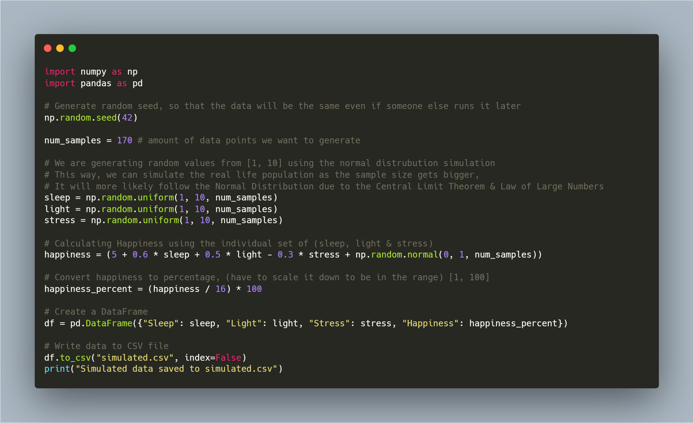
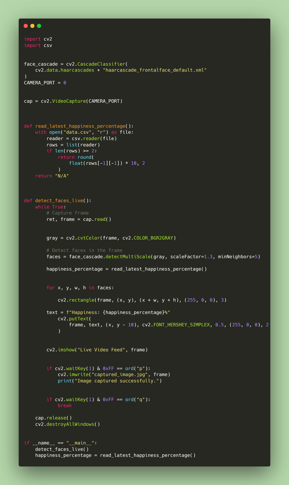
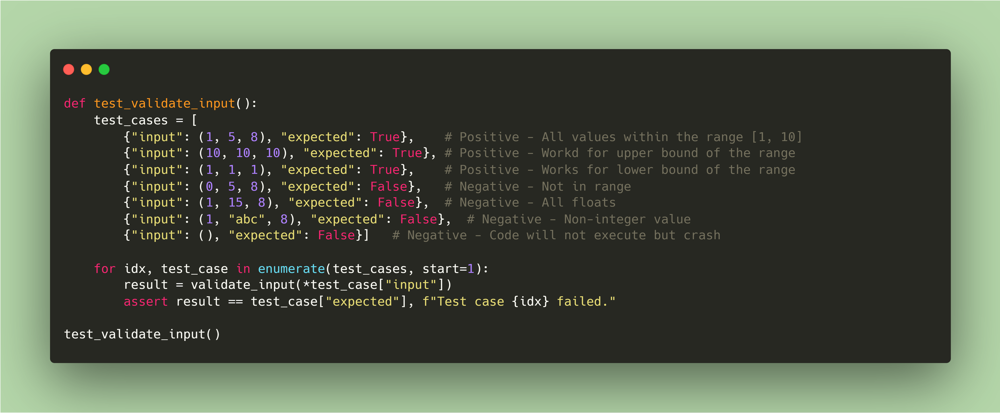
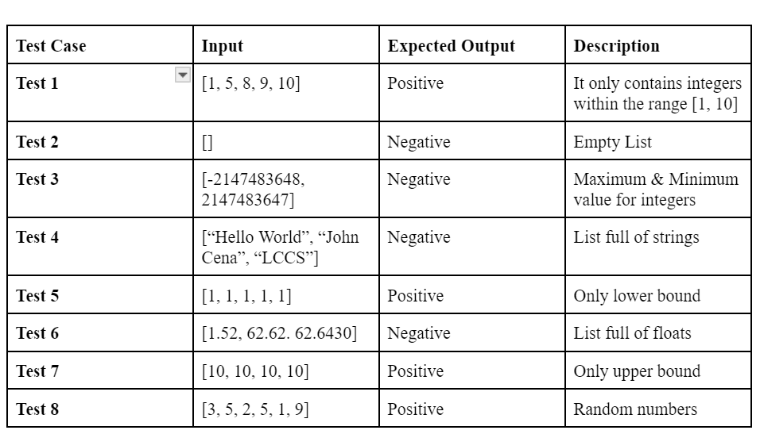
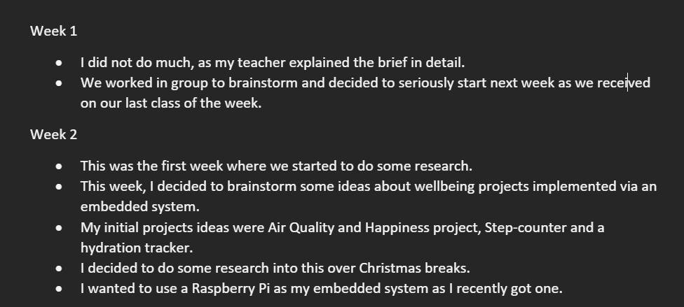
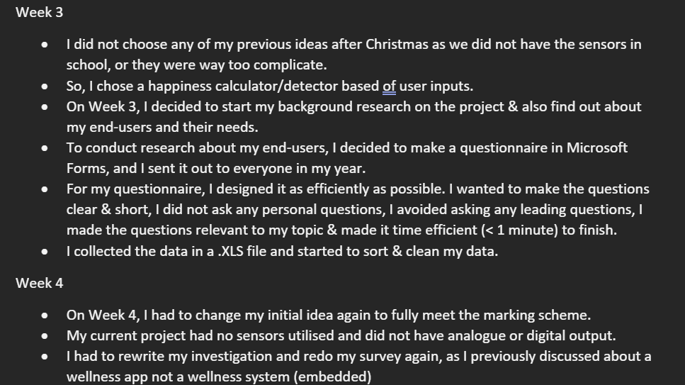
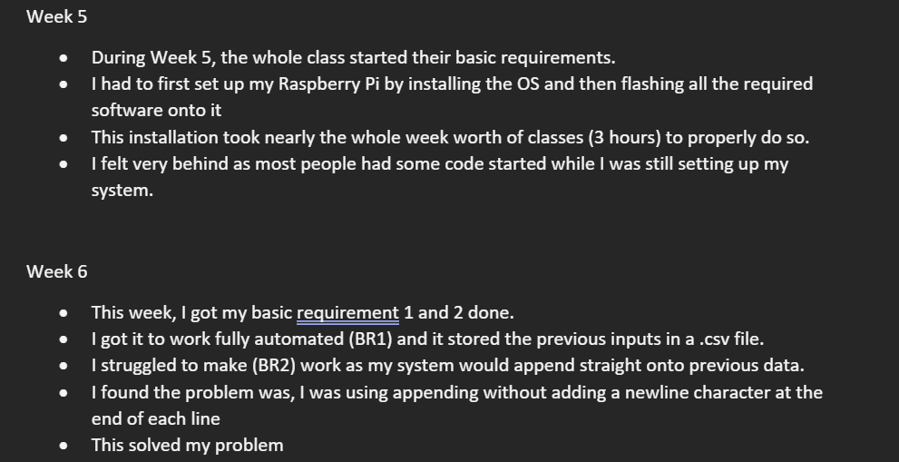
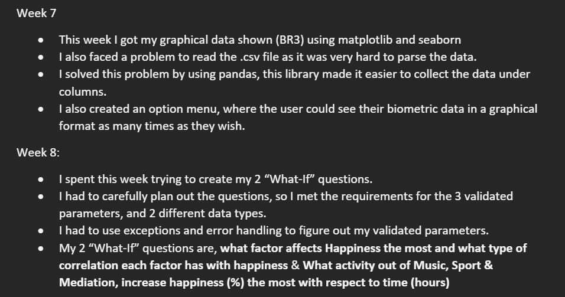
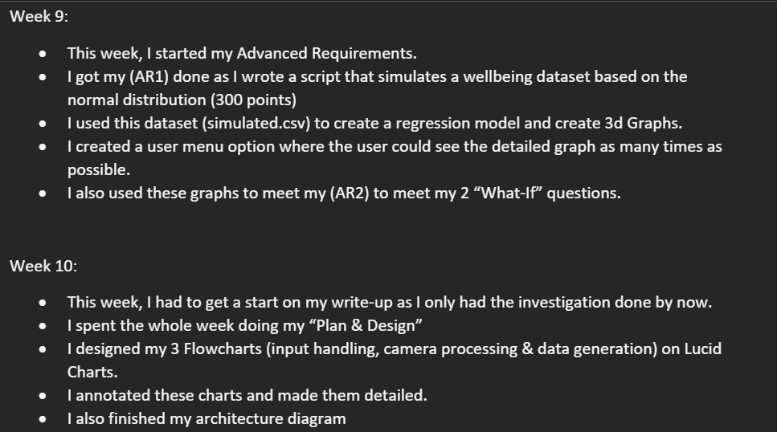
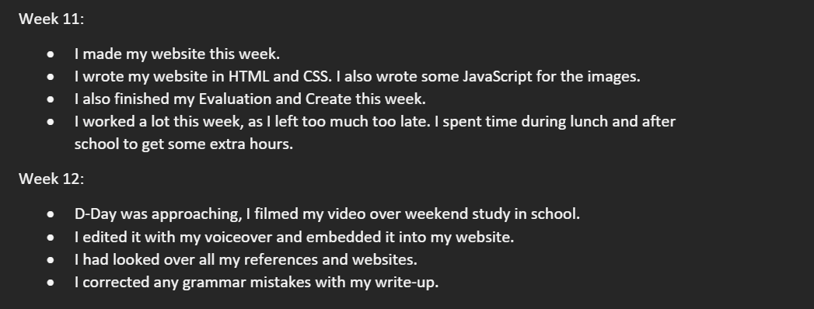

Problem encountered during the process:
- The most significant issue I encountered during this project was Dependency Conflicts with Python packages. Dependency Conflicts occur when you install a Python package but that prevents another package from working due to compatability issues.
- I was able to build the code without errors, however when executed, it resulted in runtime errors due to incompatible external libraries.
- This took a lot of time to figure out what was going wrong, as I had no syntax error, logic error or even missing packages
- Conflicting dependencies also messed up my interpreter and I had no idea what had gone wrong.
How I overcame this issue:
- I temporarily fixed the problem, by flashing the Raspberry Pi OS again onto the microSD card. This temporarily reset all the default packages and libraries to their ground state
- But this was not a permanent solution as it would break the system packages when I downloaded external packages.
- I had to install another (older) version of Python so that it would be supported by all my dependencies. This had its own problem as it led to there being a conflict with the global interpreter and local interpreter. I had to use pyenv, a python version manager to avoid this conflict.
Software used to solve this:
- I used a built-in container(virtual environment, similar to docker container) made for python packages to avoid conflicting packages. This way all the packages I needed for this project are kept isolated from my global packages and prevents any dependency errors.
- I also used pyenv to help sort out the different Python Interpreters I had on my System. It helped seperate the global and local Interpreters.
- I also used a debugger, this was very helpful. I always knew about the debugger but never used it as I never coded something so complex.
- It turned out to be a life-saver as it always helped me find logical errors in my code.
Essential piece of code in my Project:
- The code in generate.py is very important for my Advanced Requirements as it generates the data needed for my regressions.
- It is crucial in answering my 2 "What-If" Questions and is needed to accurately model any regression in my project.
- Another important piece of code in my project, is picture.py, This script is called by main.py and is the bridge between the RPi OS and the sensor.
- Code is crucial as it is needed to fulfill my Basic Requirements and helps tick the boxes for digital/analogue input & outpupts.
What does it do and how does it work:
- The code in generate.py, creates 170 data points for me using the Normal Distribution, this models the population more accurately than randomly choosing numbers.
- It is crucial in answering my 2 "What-If" Questions and is needed to accurately model any regression in my project.
- The data created by generate.py (simulated.csv) is used to create all my advanced requirement graphs (regressions & 3D Graphs)
- Another important piece of code in my project, is picture.py, This main function in picture.py is called by main.py and is the bridge between the RPi OS and the sensor.
- This code is crucial as it is needed to fulfill my Basic Requirements and helps tick the boxes for digital/analogue input & outpupts.
- It not only read images from a live video stream, but also detects the faces by detecting R.O.I (Region of Interest) and draws a box around the R.O.I.
Unit Testing Carried Out
- I used Black Box Testing Extensively throughout my project. This is because this was the easiest to explain and carry out.
- I could not carry out White Box testing as much because how the Camera captures live images and transforms them into digital data is far beyong my knowledge
- Throughout all my iterations, I used Black Box Testing. This way, I was always sure that my code worked the way it was meant to.
- To carry out Black Box Testing, I decided to create some test cases in a table in Word. I predicted the desired output and wrote a function to carry this out.
- I used the Dict data type here to bond a test-case and its expected value. This way, I could easily check if a test case passed instead of checking via If-statements.
- I used all possible data types and edge cases to break my input function. All the invalid inputs were correctly handled via Exceptions and all the inputs met my desired output.
- When all my test cases passed, I knew my function was "Unbreakable" and I was happy to use it in my embedded sytem.
- I carried out System Testing towards the end of my project, when filming the video to make sure all the components of my project (camera, RPi, monitor, keyboard) all work together.
- System Testing refers to the whole system working in unison and from my video, it is evident that my project passed its system testing requirements, as it works fine with its sensors and external devices.
Weekly Log

Generation of my dataset (extrapolation) (generate.py)

Code that takes reads images and detects faces. (picture.py)

Unit Testing Function (Black Box).

Unit Testing Table (Black Box).
Weekly Log

Write-Up of first 2 weeks.

Write-Up of week 3 & week 4.

Write-Up of week 5 & week 6.

Write-Up of week 7 & week 8.

Write-Up of week 9 & week 10.

Write-Up of week 11 & week 12.